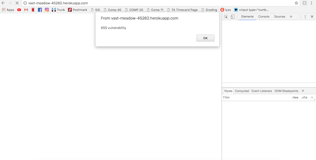
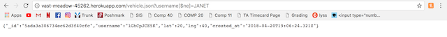

Security Write-Up by Julia Hedrick
Introduction
I have been hired to find security vulnerabilities in Reed Thomas-McLean's second and third assignment. His application is: vast-meadow-45262.herokuapp.com
Methodology
data here....
Abstract of Findings
data here....
Issues Found
Vulnerability #1 here
Cross Site Scripting
- location: vast-meadow-45262.herokuapp.com/
- Severirty: The severity of this vulnerability is severe. Cross Site Scripting allows the HTML and Javascript of a webpage to be changed dynamically. Although I just send an alert script, one looking to do more harm could easily do it. For example, XSS can put users at risk of fake information, annoying alert messages, code injections, and stolen cookie information.
- Description: I found the vulnerability using the curl command: curl --data "username=<script>alert('XSS vulnerability');</script>"&lat=39&lng=50" https://vast-meadow-45262.herokuapp.com/rides. I used the username attribute because the lat and long were successfully checked to see if they were numbers or not. Clearly, the usernme was not sanitized.
- Proof of vulnerability:

- Resolution: To resolve this issue, all user input should be sanitized in order to prevent user input from being javascript that changes the state of the website. To prevent it from being interpretted as code, angle brackets can be changed to < or >.
- Other: This vulnerability means that this application is also vulnerable to html injections. This form of injection is much weaker than one of javascript, however, it did allow me to use an image as the username of a passenger, which was not the intention of the one writing the application.
Sensitive Data Exposure with Mongodb Injection Attack
- location: vast-meadow-45262.herokuapp.com/vehicles.json
- Severirty: This vulnerability is severe because it allows hackers to indirectly have access to potentially sensitive data like location. This problem, in a setting with username, passwords, and credit card information is especially severe.
- Description: When using the query string: username[$ne]=JANET, I was able to gain access to information about all the other vehicles in the collection. This is known as mongodb injection attack with php.[$ne] turns the query into an associative array.
- Proof of vulnerability:

- Resolution: This kind of vulnerability can be prevented by stopping the use of comparison operators. A function that replaces or removes all special characters could prevent this. Or, the input can be casted to strings. As usual, ALL inputs should be sanitized.
Conclusion
data here....
References
- http://blog.securelayer7.net/mongodb-security-injection-attacks-with-php/
- http://php.net/manual/en/mongo.security.php
- https://tuftsdev.github.io/WebProgramming/notes/web_security.html